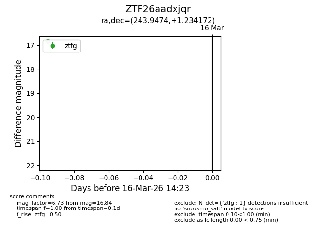
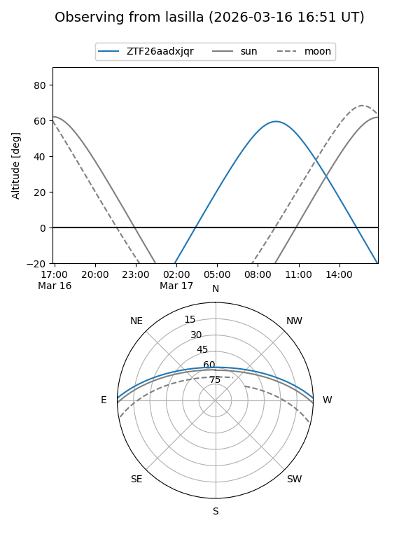
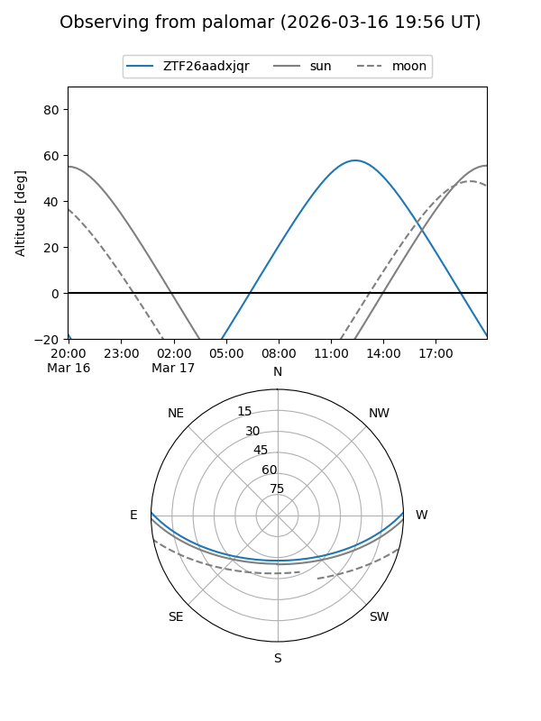

ZTF26aadxjqr
Target ZTF26aadxjqr at 2026-03-16 14:27
Aliases and brokers:
FINK: link
Lasair: link
ALeRCE: link
alt names
ZTF26aadxjqr (ztf,fink_ztf)
Coordinates:
equatorial (ra, dec) = 243.9474,+1.23417
equatorial (HMS+DMS) = 16:15:47.37,+01:14:03.02
galactic (l, b) = (13.9769,+34.66085)
Flags:
Photometry:
last ztfg=16.84
1 ztfg detections
Lightcurve

Visibility


Additional plots